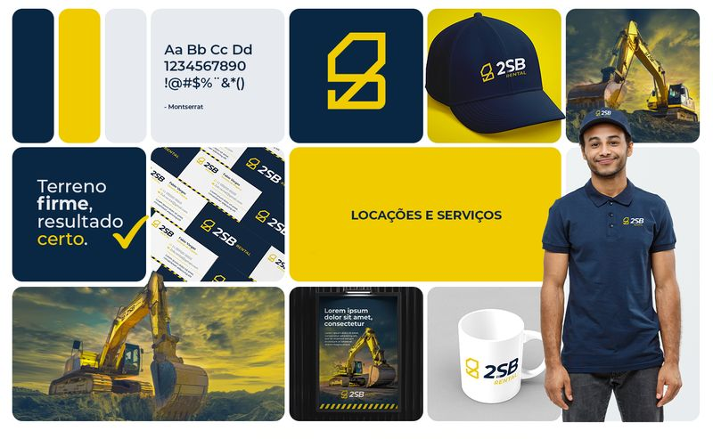

Cliente ORLANDO2025Locação de máquinas
2SB Rental
- Desafio
- Apresentar uma empresa de locação e serviços com máquinas pesadas com a solidez de uma operação estruturada.
- Decisões
- Amarelo de maquinário com azul-marinho, legível em frota, uniforme e obra.
- Símbolo com versões para usos grandes e reduzidos.
- Assinatura “Terreno firme, resultado certo.”
- Aplicações
- Papelaria, uniforme, frota, redes sociais e brandbook.
Projeto de identidade visual. Resultados comerciais do cliente não são divulgados.